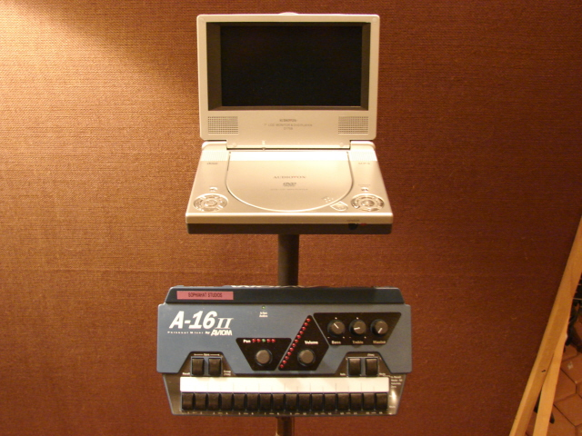

Gear
Digital Recording
Multi Format Digital Recording
MultiFormat Digital Recording
We are a digital based multitrack studio and offer several recording
mediums. Most of the work we do however is in ProTools. Currently we run
Pro Tools 9 with a Black Lion modified 002 system. Although it is not a TDM system, we use the
Complete Production Toolkit to unlock all of the features of the larger TDM systems. For the
clients that means higher track counts, more editing features like Beat Detective across multiple
tracks, multitrack Quickpunch, ultrasmooth pitch and time editing, etc,. We can also accommodate
projects in Logic and Digital Performer. Projects can be delivered in
these formats as well as all other standard mix formats. In addition to
ProTools, we use Audition, Waveburner and an Alesis Masterlink for
mastering projects.
Although we work mostly in the box, both locations use digital mixers for monitoring during tracking and occasionally for summing at mixdown. While we do not depend on them to shape the sound or use their converters, we treat them like control surfaces with digital patching capabilities. The Green Lake location uses a Tascam DM24 and the Lake City space uses a Mackie D8B.
Mics and Preamps
Mics and Preamps
Mics
Our mic locker includes: AKG 414, 2-Josephson C42s, Rode K-2, Neumann
TLM 103, 2-Earthworks TC40k, Shiny Box 46 MXL Ribbon, PPA R-2 Stereo Ribbon, Royer R121, Chameleon
Labs TS-2, 2-AKG C3000s and D112, AT-4033, Sennheiser 421, EV ND 468 and
358, 2-SM57, AKG C451, and 2-AKG C1000s.
Preamps
Our Preamps include 2-Daking #52270s, a Universal Audio 4-710 and LA-610, a Focusrite 428, and a Presonus Digimax
as well as the Black Lion modified 002R preamps, which incidentally sound great.
DIs
Direct Injection boxes by A Designs and Radial
Outboard Gear
Outboard Gear
Outboard Gear
Although we are mostly "in the box", we do have the following available:
DBX 266
BBE Sonic Maximizer
Lexicon MPX 500
Roland SDE 330
Roland SRV 330
Lexicon PCM91
Kurzweil KSP8
Frostwave Resonator
Hughes and Kettner Replex Delay
MIDI Hardware
MIDI Keyboards and Modules
For you retro gearheads out there, here's a list of our MIDI gear. Please call ahead to ensure the gear you need is onsite for your session.
| EMS Synthi AKS | Oxford Oscar |
| Sequential Circuits Pro One | Novation Supernova II Pro X |
| Ensoniq Fizmo | Roland JD-800 |
| Yamaha FS1R | Future Retro 777 |
| Korg Wavestation SR x2 | Korg Wavestation A/D |
| Oberheim Xpander | Roland D550 |
| Technics WSA1 | Roland JP-8000 |
| Akai S6000 | Emu Planet Earth |
| Roland R70 | Kat Trapkat |
| Nord Electro | |
Plugins and Virtual Instruments
Plugins and Virtual Instruments
Effects
We use the entire suite of tools from within the Waves Mercury Bundle, the Waves
SSL and API collections, Avid Complete Production Toolkit 2,
the Universal Audio UAD-2 card with emulations of classics by Neve, Pultec,
Fairchild and Teletronix. In addition, we also have the Melodyne Editor and
Autotune EVO hanging around in the shadows.
Instruments
If you need sampled sounds to flesh out your arrangement, we have a large selection of high quality content.
In addition to the large instrument library included with Logic, we
also have the Native Instruments Komplete 7 including: Kontakt,
Reaktor, Absynth, Massive, Traktor, Guitar Rig, and Battery. Last but not least, we also have
library of sounds from the MOTU
Ethno collection and the Mach V sampler.
Acoustic Instruments and Amps
Real Instruments and Amplifiers
Piano
We have recently added a Fandrich 6' 8 grand piano to our main room.
It is absolutely a wonderful instrument to play and record. Check out
the Fandrich Piano
website.
Guitar Amps and Effects
Here's a list of our guitar amps and pedals available:
Fractal Audio Axe-FX Standard
Orange OR80
Laney Pro Tube 100
1977 Marshall JMP 100watt
1976 Hiwatt Custom 50watt
Demeter Silent Speaker Cabinet
Hughes and Kettner Access Preamp
Framptone Talkbox
Rivera R100
Mesa Boogie 5-25
Henriksen Jazz Guitar amp
Polytone Mini Brute II
Boss Gt-60
Line 6 POD XT Live
Roland GR-33
Monitoring
Monitoring and Headphones

Monitors
At our Green Lake location we have pairs of Genelec 1031s and Event PS6s for stereo monitoring. For mixing in 5.1 we use the ADAM A3x for L,C,R,LS,RS along with the ADAM Sub 12.
At Lake City there are Mackie HR824s.
Individual Monitors
One trait that sets us apart from other small studios is our individual monitoring
setup.
Headphone mixers by Aviom and video camera/monitor stations for visual contact.
The avioms give every musician (up to five) up to 16 channels of audio for them
to mix to their own taste. Most people find this quite liberating when tracking
or doing overdubs. It also frees us up to work exclusively on the sounds rather
than futz with everyone's headphone mix. On top of that it cuts back on setup time
which makes everyone happy!
Note: Because we work out of two locations, some of the gear may need to be reserved in advance. It's best make this arrangement when scheduling your session.

{kind=link}